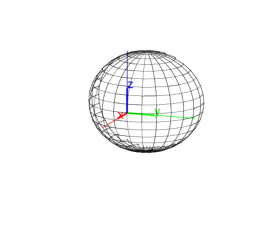

14.15.4 Spheres: sphere
The sphere command creates spheres.
-
sphere takes two arguments:
P,R, either two points or a point and a real number.
- sphere(P,R) returns:
-
a sphere with diameter PR, if R is a point.
- a sphere with center P and radius R, if R is a number.
Examples.
-
Input:
sphere([-2,0,0],[2,0,0])
Output:

- Input:
sphere([0,0,0],2)
Output: